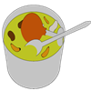

Información
Durante la adolescencia, pertenecer a un grupo se convierte en una necesidad, y lo que configura al grupo son las afinidades como los gustos, las formas de vestir, las formas de pensar y ver la vida, los grupos musicales, etc. Esto convierte a las redes sociales una plataforma ideal para ampliar el círculo de "amigos". Que algunos si forman parte de la vida diaria pero hay contactos que son desconocidos y se debe de tener un cuidado especial al momento de aceptar a personas que no generan confianza.
| Condiciones de victoria | |
|  | Deberás de mantener la sopa en una temperatura media. El termómetro indica la temperatura de la sopa, sí la sopa esta muy caliente debes de soplar antes que se termine el tiempo. |
| Condiciones de derrota | |
| Cuando el termómetro tenga temperatura muy baja o alta, fuera de la región de temperatura media. (Ten presente que con el tiempo la sopa irá perdiendo calor, lo que significa que la temperatura gradualmente bajará) |
|
Controles
 |
Debes soplar para que el termómetro llegue a una temperatura media |